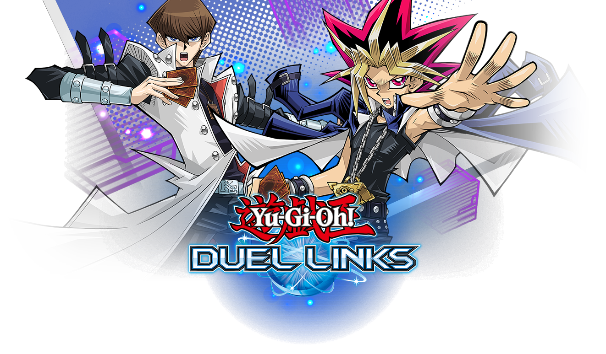
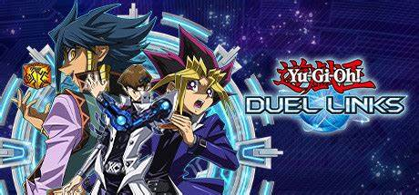

Here is where we teach you how to construct a deck that can be used competitivly.
We will be using decks that are meta and that you can build from the start of joining the game.
We will start off with an easy deck to make which is dark magician this deck will get you through the early stages of duel monsters and you should have no problems taking down Npc decks
Dark magician
- Dark magician x3
- Dark palidin x1
- Magicians navigation x2
- Magicians curtain x1
- Magicians rod x2
- Magician of dark illusion x2
- Dark magicians circle x2
- Dark cavelry x1
- Eye of timius x1
- Amulet dragon x1
- Raigeki break x2
- Ilussion magicx1
Red eyes fusion
- red eyes black dragon x1
- red eyes fusion x1
- polymarazation x2
- red-eyes Wyvern x1
- Arisen Gaia the fierce knight x1
- Red-eyes archfiend of lightning x1
- Keeper of dragon magic x1
- Red-eyes retro dragon x1
- The dark - Hex-sealed fussion x1
- Mystical sheep #1 x1
- Xsaber anu piranha x2
- Beckoned by the world chalice x2
- Enemy controller x1
- Power of the guardians x1
- Birthright x1
- Return of the Red-eyes x1
- Spikeshield with chain x1
- Dark cavalry x1
- Red-eyes slash dragon x1
- Sky galloping Gaia the dragon champion
Blue eyes fusion
- Blue eyes alternative white dragon x1
- The white stone of anciantes x3
- Dragon spirit of white x1
- Sage with the eyes of blue x3
- The white stone of legend x1
- Blue eyes white dragon x3
- Caards of consonance x3
- Ancient rules x1
- Karma cut x2
- Ultimate providence x2
- Blue-eyes spirit dragon x2
- Vermillion dragon mech x1
- Azure-eyes silver dragon x1
- hieratic sun dragon overlord of heliopolis x1
- Number 46: Dragluon x1
- Sylvan princessprite x1
Deck building is going to be one of the key things about dueling opponents online because if you don't have a semi sort of decent deck well at least you tried.
but deck building is one of the key things that makes you a duelist as well so go out and have fun dueling with one of these decks.
My Grandfathers deck has no pathetic cards kaiba
Yami yugi
